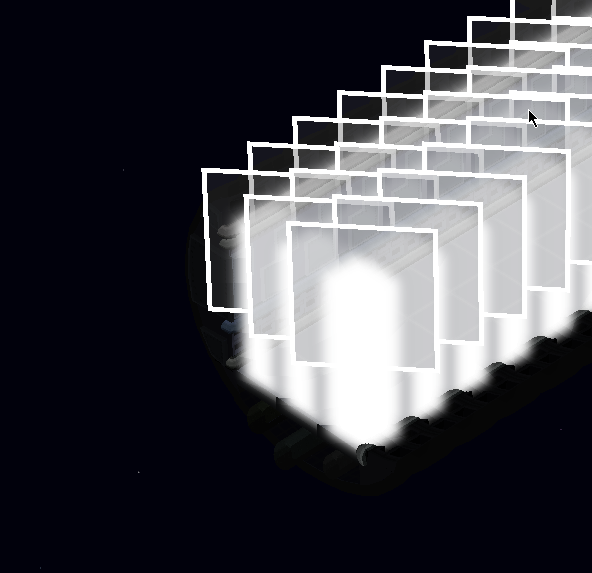
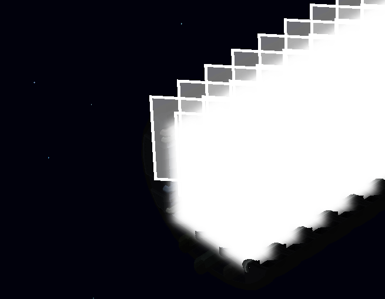

Hello
I am trying to make a new render target in the render path with an alpha pass.
It doesn’t work ONLY in the new render target and not in the default.
I am not sure why but it looks like when I am drawing on top its clearing the objects beneath it.
I am using the same materials and techniques for both images. The only difference is the render path.
I copied the forward render path and moved its alpha pass out into my own render path extension where I render alpha in its own render target and then draw the render target on top of the screen last.
Here is my extension for drawing the render target to the screen:
<renderpath>
<rendertarget name="tile_lights" tag="TileLighting" sizedivisor="1 1" format="rgba" filter="true" />
<command type="clear" tag="TileLighting" color="0 0 0 0" output="tile_lights" />
<command type="scenepass" pass="alpha" vertexlights="true" sort="backtofront" metadata="alpha" output="tile_lights"/>
<command type="quad" tag="TileLighting" vs="ApplyTexture" ps="ApplyTexture" psdefines="DIFFMAP" blend="alpha">
<texture unit="diffuse" name="tile_lights" />
</command>
</renderpath>
here is the screenshot:

However it should look like this, as rendered without the additional render path and with the default alpha pass.

The only difference between these two images is where I put my alpha pass, either in the default render target or my own.
Why does the alpha pass blend improperly when using a render target?
One thing to note aswell, if I have two alpha passes then I get a hard crash, is there any magic done in the alpha pass that I am not aware of?
Some more information:
- I am using opengl
- I use Forward render path as my base ( although this occurs still if I erase all commands from it excluding clear pass
- This happens to ANY render target that renders alpha even if there is a single pass, so if I push everything from the forward render path to render target I still get the same blending issue.
- this only happens when I use any alpha blending inside a render target that isn’t the default